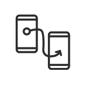

Voorwoord
Figma is een prototyping tool wat nu door heel veel bedrijven in plaats van Adobe XD wordt gebruikt. Het leek me daarom handig om het programma te ontdekken en te verkennen. Ik had net een website ontdekt van een tattoo shop in Den Haag dat redelijk toe was aan een herdesign. Zo hoopte ik ook aan een client case te komen, alleen waren de eigenaren niet geinteresseerd. Ik heb besloten om door te gaan met het project omdat ik voor mijn pitch al was begonnen en ik een duidelijke visie had.